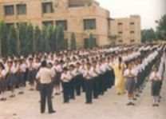
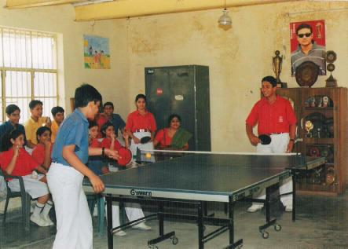
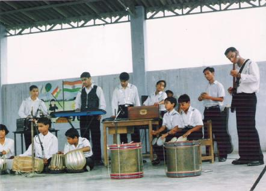

- MORNING ASSEMBLY
- 
-
A working day at the school commences with the morning assembly. Resonent with Vande Matram and Vedic Mantras, the morning assembly's atmosphere exercises a very ennobling influence on the minds of students. Short quizzes, news and thought for the day are given. Presence of all the students is essential at the morning assembly.
-
- HOUSE SYSTEM
- 
-
One of the main objectives of the House system is to foster in students a sense of collective responsibility and solidarity at the same time kindling and developing the social qualities latent in every child through competitions among six houses.
-
Each house is headed by a Incharge (a teacher), a head prefect and vice prefect (student).
Head prefect is the incharge of prefect and the Games Captain is the incharge of co-ordinating Sports activities among the student body. The system of prefect body managing the six houses help to develop a spirit of team work with co-operation, co-ordination, understanding and inculcating a sense of responsibility.
-
- MUSIC
-
The reverberating sounds of instruments, enthusiastic participants are the essential part of the School's music department.
-
FOR JUNIORS :
- Action Songs
- Patriotic Songs etc.
FOR SENIORS :
- Classical Songs
- Classical Dance (Kathak)
- Semi Classical Dance
- Instrumental Music
- Casio, Tabla, Congo,
- Bongo, Guitar, Sitar etc.
- Western Dance & Creative Dance
- Different Taals theory and practical.
{kind=link}